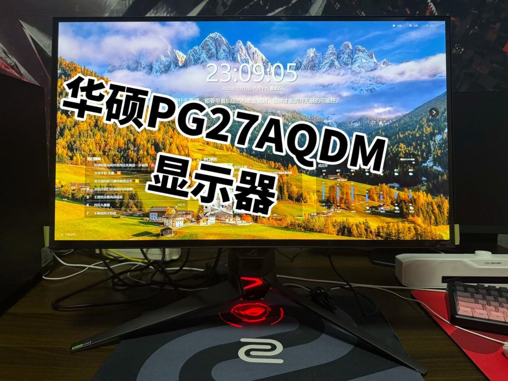

华硕 ROG PG279QM

ROG 旗舰电竞显示器，27 英寸 2K Fast IPS 面板配 240Hz 刷新率与 1ms 响应，内置 G-Sync 专用处理器与 NVIDIA Reflex 延迟分析器。出厂预校色 ΔE<2，95% DCI-P3 色域兼顾画质与速度，是 FPS 硬核玩家的经典之选。
客观评测
PG279QM 采用 27 英寸 2K Fast IPS 面板，240Hz 与 1ms 响应在快速画面中保持清晰，兼顾速度与可视角度。内置 G-Sync 硬件处理器，可变刷新率稳定可靠，并支持 NVIDIA Reflex 延迟分析器。实测 DCI-P3 色域约 95%，出厂校色 ΔE<2，色彩强于多数电竞屏。接口提供 HDMI 2.0×2 与 DP 1.4，HDR 认证 DisplayHDR 400，亮度中规中矩。支架支持全向调节，做工扎实。
主观点评
这是我心目中「速度与画质平衡」的标杆电竞屏：240Hz 顺滑得像抹了黄油，画面颜色又不像一般电竞屏那样寡淡，单机大作和电竞两不误。G-Sync 模块让人完全不用操心撕裂和闪烁问题。不足是 HDR 只算入门，底座也比较占地。如果你主玩 FPS 但又在乎画质，PG279QM 是多年验证过的稳妥选择。
优点与不足
- 240Hz 加 1ms Fast IPS，FPS 画面丝滑无拖影
- G-Sync 硬件模块，兼容性与稳定性出色
- 出厂预校色，画质在电竞屏中属上乘
- HDR 峰值仅 400 尼特，HDR 体验一般
- 上市较早，价格依然坚挺
- 边框与底座占用桌面空间较大
参数规格
| 尺寸 | 27 英寸（16:9） |
|---|---|
| 面板 | Fast IPS |
| 分辨率 | 2560×1440（2K） |
| 刷新率 | 240Hz |
| 响应时间 | 1ms GTG |
| 色域 | 约 95% DCI-P3，125% sRGB |
| 亮度 | 典型约 350 尼特，HDR 峰值约 400 尼特 |
| HDR | DisplayHDR 400，HDR10 |
| 对比度 | 1000:1（典型） |
| 接口 | HDMI 2.0×2、DP 1.4、USB 3.0×2 |
| 同步 | NVIDIA G-Sync（硬件模块） |
| 支架 | 升降、俯仰、侧转、旋转，支持壁挂 100×100mm |
| 其他 | NVIDIA Reflex 延迟分析器、ROG 神光同步、内置音箱 |